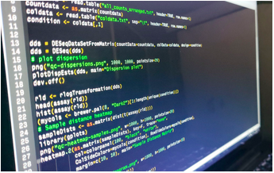
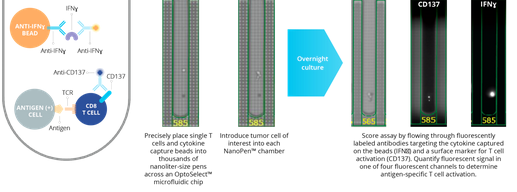

CS in the topic of Biology is used tools and methods usually for CS, and to comprehend and read data for biology. The middle ground being called Bioinformatics.
A lot of computer science is used to solve problems by reading ideas and research that would usually take an extreme amount of time to be able to analyze. There are in general a lot of benefits to having CS inventions and innovative ideas, including
This innovation subject overall can be extremely useful, especially since its a bit newer, and can be extremely useful in the future.
For the current issues in this field, there have been a few ideas made on how to minimize the issues and be able to create an efficient solution. The following included are some innovations that have specific problems that
Its used in developing T-cell therapies which is very complicated because [articles below]“T cell-mediated tumor death relies on complicated t-cell interactions and several complex mechanisms.” What does this mean? Basically says that T-cell analyzed evidence takes a lot to understand and research, so using the machine makes it quicker to understand these complicated methods usually needed for research.
This technology is very helpful when needing to quicken up any screenings necessary. Basically means it's extremely helpful in sequencing genomes, and a plus is its much more cost effective and is much quicker than other similar machines out there
A lot of the time researching the above also gave the ideas of how there are many details that can be improved. The current tech, while it does work well for their respective problems, the field is constantly evolving, and CS tech is constantly getting much more and more improved. With that thought in mind, there are definitely different ways that CS will eventually be used in the future.
Sources for above
Since bioinformatics/computational sciences is generally a fairly new field in science, it is very susceptible to a lot of issues and complex problems that could pop up, but that also presents the chance to create different ideas to be able to advance in the future. One of the first things to think of these ideas is to think what are the main problems?
Example problems: The following were some main issues found than can be solved in the future...
Prediction is one of the things that can be difficult to find, and a huge example of this is the prediction in unknown, unfamiliar structures, similar to proteins. The inability to do this can stop the process of identifying substances and can affect how scientists see the research.
People in this field utilize computers to study diagrams and simulate structures like the membrane. A main problem that can occur in the future is how limited the computer's current tech level is, because current computer tech can only go so far.
Sources for above
One idea is to design something, unlike the computer, that would have the hardware as well as the available software to be able to expand the research parameters and be able to get better results. The device could include tech that would be hard to achieve in current day computers, which would mean it could be something to be thought about in the future.
As time goes on as well, in the future an idea would be to take into consideration when improving technology the field of bioinformatics. That way tech can be suitable for the standards needed in the field, and can aid along the way.